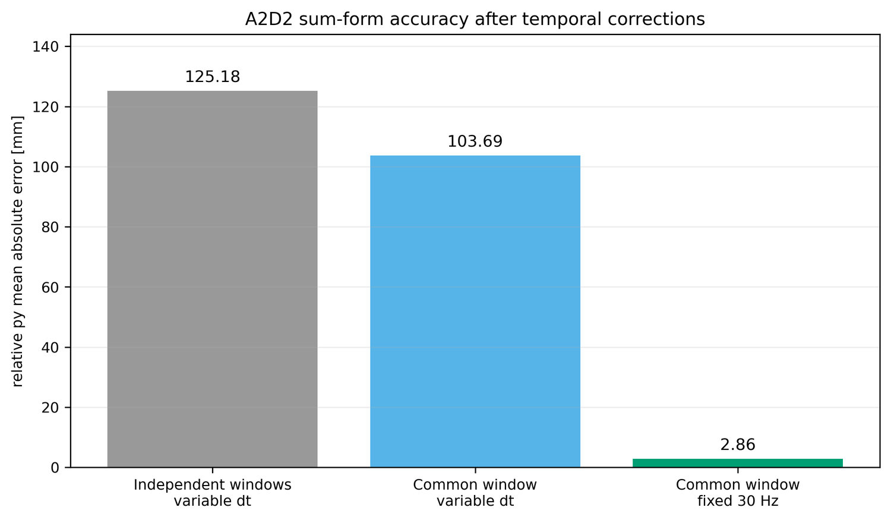
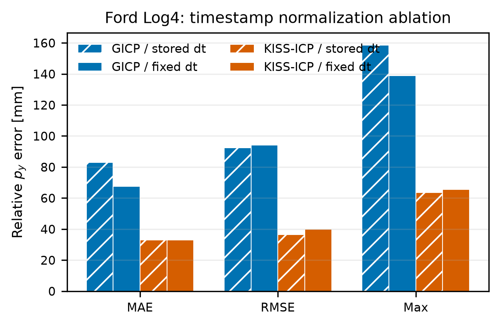
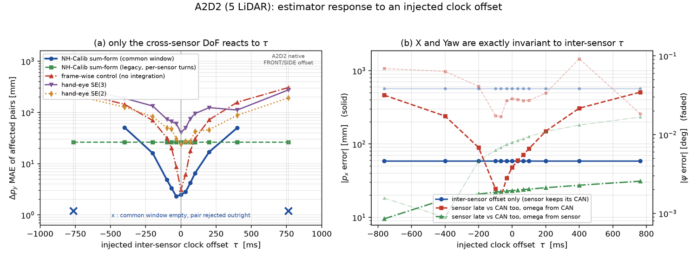
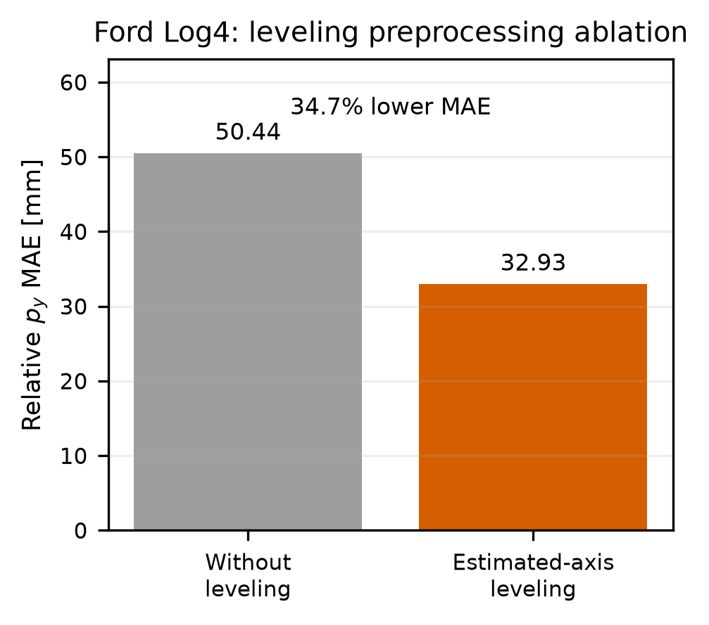

Ablation catalogue
Every controlled experiment run on the pipeline, including the ones the paper has no room for and the ones that changed nothing. Each entry states what was varied, what was held fixed, the numbers, and what may not be concluded from them.
1 Frame interval and common window
Two factors crossed on A2D2 over 20 directed pairs: whether the defective stored frame interval or a fixed nominal interval is used, and whether each sensor integrates over its own turn windows or over the intersected common window.
| Frame interval | Window handling | MAE [mm] | RMSE [mm] | max [mm] | Mean windows |
|---|---|---|---|---|---|
| stored | per-sensor windows | 125.18 | 139.32 | 223.39 | 12.2 |
| stored | common window, quality gate off | 145.76 | 168.00 | 287.36 | 11.0 |
| stored | common window, quality gate on | 103.69 | 122.67 | 249.16 | 10.3 |
| fixed 30 Hz | per-sensor windows | 21.08 | 24.70 | 45.35 | 12.2 |
| fixed 30 Hz | common window, quality gate off | 2.8615 | 3.3186 | 5.570 | 11.0 |
| fixed 30 Hz | common window, quality gate on | 2.8615 | 3.3186 | 5.570 | 11.0 |
- Fixing the frame interval alone accounts for −83 % of the error. It is the dominant factor in the entire catalogue.
- On top of a correct time base, the common window is worth a further factor of about seven.
- On a corrupted time base the common window is worse than per-sensor windows by 16 % unless the quality gate is on — so the apparent benefit of the common window under the stored interval was entirely the gate rejecting corrupted observations.
- Once the time base is correct, the gate rejects nothing at all, which is why the last two rows are identical.


2 Injected clock offset
A synthetic offset is added to one channel's timestamps and the whole estimator is re-run, over a grid up to ±763 ms — the native acquisition offset between the A2D2 front and side units. Two questions are asked at once: which degrees of freedom move, and whether integrating over a segment attenuates the offset relative to fitting the same model per sample.
| |τ| [ms] | Sum-form, common window | Sum-form, per-sensor windows | Same model, per sample | Ratio | Hand-eye SE(3) | Hand-eye SE(2) |
|---|---|---|---|---|---|---|
| 0 | 2.47 | 26.36 | 3.08 | 1.2 | 40.53 | 24.02 |
| 33 | 2.56 | 26.36 | 7.41 | 2.9 | 55.04 | 28.77 |
| 67 | 3.77 | 26.36 | 19.00 | 5.0 | 70.71 | 37.38 |
| 100 | 5.68 | 26.36 | 31.25 | 5.5 | 84.33 | 46.12 |
| 200 | 16.41 | 26.36 | 70.70 | 4.3 | 128.66 | 64.14 |
| 400 | 50.42 | 26.36 | 150.72 | 3.0 | 150.14 | 107.50 |
| 763 | pair rejected | 26.36 | 280.51 | — | 292.60 | 204.01 |
- Roll, pitch, mounting yaw and the longitudinal offset have a peak-to-peak variation of exactly zero across the entire grid. Not approximately flat — bit-identical, because the per-sensor stage never reads another sensor's clock.
- Integrating over a segment attenuates the offset by 3–5× relative to the identical model fitted per sample.
- Beyond the segment overlap the common-window estimator returns no estimate rather than a biased one. The pair is rejected. That is a safety property.
- The per-sensor-window variant is completely offset-blind at 26.36 mm everywhere — and ten times worse at zero offset. Accuracy is bought with offset sensitivity, and the pipeline buys it and then adds explicit alignment.
| Angular-rate source | Longitudinal offset error at ±763 ms sensor-to-bus offset [mm] |
|---|---|
| vehicle bus (default) | −284 … −717 |
| the sensor's own angular rate | −1.9 … −38.9 |

3 Slip coefficient
The lateral-velocity relaxation term carries one shared coefficient. Three conditions: free fitting, forcing it to zero, and forcing a physically motivated positive prior.
| Dataset | Front end | Condition | c [s²/m] | Yaw MAE [deg] | Absolute X MAE [mm] | Relative Y MAE [mm] |
|---|---|---|---|---|---|---|
| A2D2 | KISS-ICP | free | −0.00359 | 0.034 | 58.26 | 2.86 |
| A2D2 | KISS-ICP | c = 0 | 0 | 0.052 | 43.23 | 3.56 |
| A2D2 | KISS-ICP | c = +0.0066 | +0.00660 | 0.194 | 230.27 | 4.81 |
| Ford Log4 | KISS-ICP | free | −0.00356 | 0.430 | 57.65 | 32.93 |
| Ford Log4 | KISS-ICP | c = 0 | 0 | 0.448 | 106.09 | 33.29 |
| Ford Log4 | KISS-ICP | c = +0.0066 | +0.00660 | 0.475 | 197.80 | 34.36 |
| Ford Log4 | GICP | free | +0.00276 | 0.482 | 79.22 | 67.56 |
| RadarScenes | Doppler + CAN | free | +0.00490 | 0.070 | 64.81 | 16.69 |
| RadarScenes | Doppler + CAN | c = 0 | 0 | 0.079 | 219.92 | 16.57 |
| RadarScenes | Doppler + CAN | c = +0.0066 | +0.00660 | 0.070 | 11.97 | 16.39 |
- The relative lateral result moves by at most 2 mm across all three conditions. The coefficient enters every sensor identically, so the relative estimate largely cancels it.
- The absolute longitudinal offset is what pays, and it pays the predicted amount: 13–32 mm per 0.001 s²/m, matching the angular-rate-weighted mean square speed lever to within 10 %.
- The fitted sign is not stable across front ends — the same drive gives −0.00356 with one backend and +0.00276 with another. It is therefore treated as a nuisance parameter that absorbs a common odometry bias, not as a vehicle property.
- Correlation between the coefficient and the longitudinal offset runs +0.40 to +0.70, with normal-matrix condition numbers of 5.0e3 to 2.2e4. The two are not cleanly separable at constant speed.
4 Representative estimator
Which robust statistic condenses the per-sample fits. All four use the same accepted samples and the same coefficient.
| Dataset | Least squares | M-estimator | Median | RANSAC |
|---|---|---|---|---|
| A2D2 — Yaw MAE [deg] | 0.026 | 0.034 | 0.027 | 0.030 |
| A2D2 — X MAE [mm] | 55.83 | 58.26 | 55.80 | 55.92 |
| Ford Log4 — Yaw MAE [deg] | 0.462 | 0.430 | 0.499 | 0.451 |
| Ford Log4 — X MAE [mm] | 86.00 | 57.65 | 94.32 | 54.72 |
| RadarScenes — Yaw MAE [deg] | 0.058 | 0.070 | 0.081 | 0.069 |
| RadarScenes — X MAE [mm] | 68.46 | 64.81 | 69.27 | 65.23 |
5 Attitude oracle injection
A reviewer question: if the levelling attitude or the mounting yaw were perfect, how much of the remaining error would disappear? Ground truth is injected into the pipeline and the rest is re-estimated on fixed windows.
| Dataset | Condition | Relative X MAE [mm] | Relative Yaw MAE [deg] | Relative Y MAE [mm] |
|---|---|---|---|---|
| A2D2 | estimated roll/pitch, estimated yaw | 11.14 | 0.023 | 3.28 |
| A2D2 | ground-truth roll/pitch, yaw re-estimated | 11.04 | 0.038 | 3.31 |
| A2D2 | estimated roll/pitch, ground-truth yaw | — | — | 3.01 |
| A2D2 | ground-truth roll/pitch and yaw | — | — | 3.55 |
| Ford Log4 | estimated roll/pitch, estimated yaw | 40.98 | 0.354 | 35.17 |
| Ford Log4 | ground-truth roll/pitch, yaw re-estimated | 41.73 | 0.280 | 35.40 |
| Ford Log4 | estimated roll/pitch, ground-truth yaw | — | — | 35.52 |
| Ford Log4 | ground-truth roll/pitch and yaw | — | — | 36.35 |
- Replacing the estimated attitude with ground truth changes the lateral result by less than 1 mm, and in two of the four conditions makes it slightly worse.
- So Stage-1 attitude error is not the cause of the residual lateral error. The residual lives in the per-window integration of differential odometry error.
- That does not make levelling optional. Removing it entirely degrades the A2D2 lateral result from about 33 mm to 50 mm on the Ford case — levelling is a necessary pre-condition whose remaining error no longer matters.

6 Deskew
| Condition | Log4 | Log5 | Log6 | Windows kept |
|---|---|---|---|---|
| deskew on (either path) | 32.91 | 24.72 | 8.01 | 5 / 14 / 8 |
| deskew off | 345.48 | 370.79 | 353.95 | 4 / 8 / 3 |
7 Pooling windows across drives
| Pool | Windows | MAE [mm] | max [mm] | Median standard error [mm] |
|---|---|---|---|---|
| Log4 | 5 | 32.91 | 63.52 | 19.9 |
| Log5 | 14 | 24.72 | 47.96 | 22.7 |
| Log6 | 8 | 8.01 | 12.77 | 34.6 |
| Log4 + Log5 | 19 | 16.72 | 32.91 | 18.1 |
| Log4 + Log5 + Log6 | 27 | 10.60 | 23.82 | 16.5 |
8 Graph integration versus direct pairs
| Dataset | Directed edges | Direct pairwise MAE [mm] | Graph MAE [mm] | Direct max cycle error [mm] | Graph max cycle error [mm] |
|---|---|---|---|---|---|
| A2D2 | 20 | 2.862 | 2.848 | 0.980 | 2.2e−16 |
| RadarScenes | 12 | 16.572 | 16.586 | 1.515 | 3.6e−15 |
| Ford Log4 | 12 | 32.912 | 31.293 | 12.811 | 0.000 |
| Ford Log5 | 12 | 24.724 | 24.750 | 1.824 | 3.6e−15 |
| Ford Log6 | 12 | 8.006 | 7.280 | 16.893 | 1.8e−15 |
- Consistency is enforced, not encouraged: cycle error drops from up to 16.9 mm to numerical zero.
- Accuracy moves both ways — better on Ford Log4 and Log6, marginally worse on RadarScenes and Log5 — because the consistency projection is not supervised by ground truth.
- Direct pairwise MAE is therefore kept as an edge-quality diagnostic, and the graph value is the reported score.
9 Things that changed nothing
Negative results, kept because each one closes off an obvious suggestion.
| What was tried | Result | Why it does not help |
|---|---|---|
| Sweeping the segment quality gate over seven levels and four turn thresholds | identical MAE across six of the seven levels; only the tightest setting changed anything, and it made the result worse | the accepted segments clear the threshold by a wide margin, so the gate is inert on clean input |
| Re-weighting windows by duration instead of the shipped weight | 29.31 mm against 32.91 mm, but the fit standard error rose from 18.3 to 20–22 mm | the improvement is inside its own uncertainty, and it is a post-hoc weight choice |
| Estimating differential scale from straight sections | channel-to-channel differences of 0.01–0.04 %, |z| ≤ 0.56; ground truth confirms the true differential scale in straight driving is 1.0000 ± 0.00005 | the differential scale error that matters appears only inside turns (2.7–2.9 % against 0.9 % straight), so it cannot be measured where it is absent |
| Estimating and removing per-channel clock offsets against the chassis | offsets of 9.7–51.3 ms found and corrected; result 33.62 mm against 32.91 mm | segment integration and boundary interpolation already absorb offsets of this size, consistent with the injected-offset sweep showing +0.1 mm at 33 ms |
| Adding more turn segments by relaxing the turn threshold | 5 to 10 segments moved A2D2-style pooling within its standard error; on one backend it got worse | weak segments add samples and noise in the same proportion |
See also
- Results & metric — the headline numbers these ablations perturb
- Odometry front end results — where the residual error comes from
- Parameter reference — which parameters these experiments varied